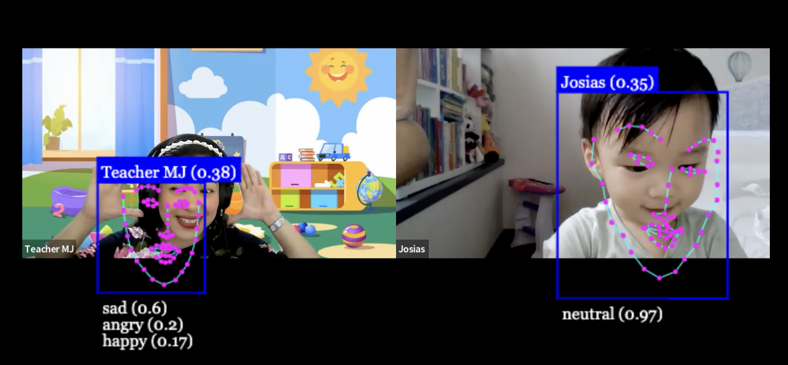
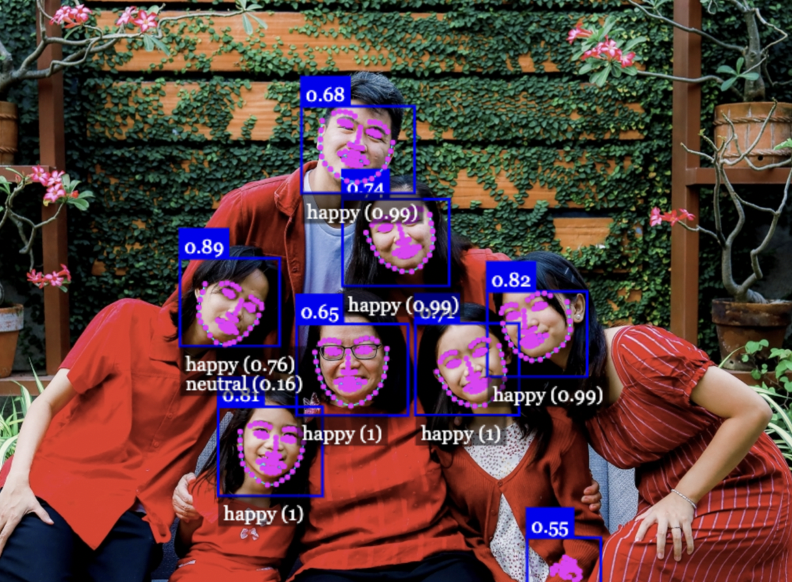
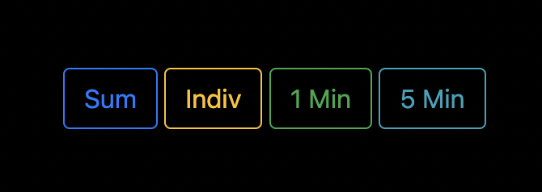
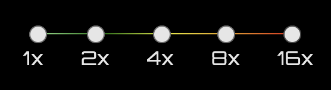
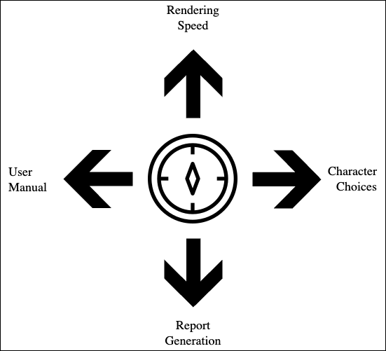
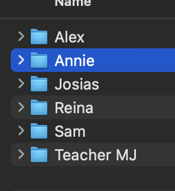
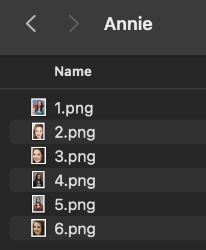
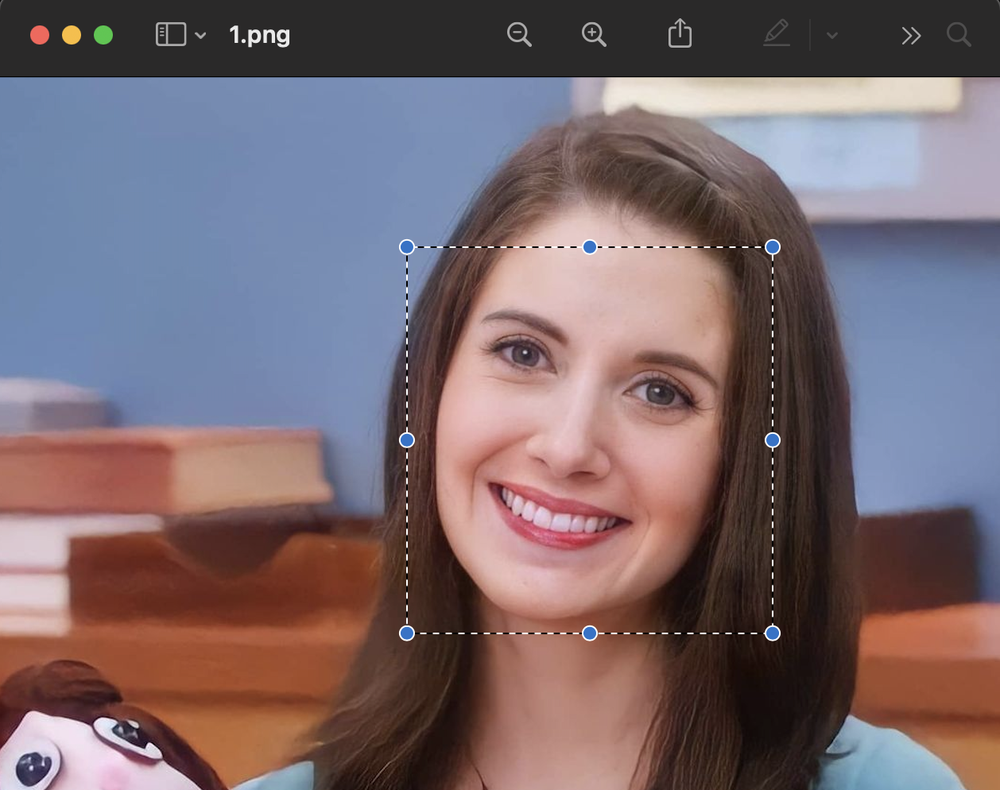

USER MANUAL
Overview

Facial recognition systems have become increasingly popular in recent years, with the ability to identify individuals based on their unique facial features. However, newer systems have advanced to the point where they can not only recognize faces but also track emotions. This technology uses advanced algorithms to analyze facial expressions and detect emotions such as happiness, sadness, anger, and surprise.
Facial recognition systems that can track emotions and recognize faces work by analyzing various facial features, including the distance between the eyes, the shape and size of the nose, mouth, and jawline, and other unique facial attributes. These features are extracted from a captured image and compared to a database of face templates to identify an individual.
In addition to recognizing faces, these systems also use advanced algorithms to analyze facial expressions and detect emotions. This involves identifying subtle changes in facial muscle movements and using machine learning algorithms to associate these movements with specific emotions.
Therefore, it is important that facial recognition systems are used ethically, with proper safeguards in place to protect individual privacy and prevent misuse of data. This includes ensuring that individuals are aware of when and how their data is being collected and used, and that appropriate measures are in place to prevent unauthorized access to or misuse of this data.
Features
The developers have successfully created a system with the following features:
Main Features
1.) Facial Recognition
The most important feature for the system as it allows the other features to work effectively. It tracks the faces on the frame by checking if the frame contains any landmarks that pertains to the human face, therefore detecting a (probably) person. Sensitivity of this sensor can be altered based on the user preferences, as it affects highly the probability of detecting a human face.
2.) Face Labelling
The system is capable of recognizing faces using an external model that uses the concept of Euclidian distance, which is the mathematical distance among the key features of the face (eyes, nose, mouth). The API calculates the Euclidian distance frame by frame, and then cross reference it with the existing reference pictures of the characters registerecd in our model.
3.) Emotion Tracking
Another main feature is the ability of the system to recognize emotions with the help of the API. It loads a preloaded model with reference images and checks if the particular frame has a character showing an emotion. This is possible because of the trained model that comes with the API. Currently, the API can recognize 7 different emotions.
4.) Attendance and Report Generation
After the rendering process, autogenerated reports will automatically be available for the user to choose. It can generate different reports that can easily help the user to analyze the video without watching it. Reports also contain the characters recognized in the video, which means this can also double as the attendance report for the classes rendered.
Auxiliary Features
The developers also created supplemental features to help the future users:
1.) Rendering Speed Setting
Located at the north area, this feature allows the user to change the rendering speed. This is especially useful when changing devices as the rendering process relies heavily on the computer. A better processor means it can handle a faster speed.
2.) Character Choices
Located at the east area, this feature allows the user to select the participants that would only be recognized by the system. This would greatly improve the accuracy and the performance of the system.
User Interface
The Compass Layout
The system has been implemented witb a compass layout, which means that different functionalities are housed at different directions of the website.
With a simple hover into the particular direction, the functional house will be displayed. This hover feature gives the layout a clean and sleek overall look, as functionalities will only be seen if the user needs it to be.
Areas / Sections
North Area
The north area houses the speed rendering options. This functionality allows the user to manually select the speed of the renderation process. Speeds are completely up to the user's preferences and device specs, as faster speeds require a more advanced computer specs in order for the process to be fully utilized.
East Area
The east area houses the character choices section. This functionality allows the user to select only the relevant people found in the video. This is to done to improve accuracy and lessen the computer load.
West Area
The west area houses the user manual module. This functionality gives the user the information needed all about the system. This is to make sure that future succeeding users can still understand the program.
South Area
The south area houses the report generation section. This functionality only shows in the Playground layout, which automatically displays after the video is fully rendered. This is to make sure that reports will not be generated prematurely.
Installation
...
How to Use
Creating New References
1.) Navigate to the root home folder to find the students folder.
Here you'll see the different people that can be recognized by the face labelling feature. Treat this is as your database.
2.) Create a new student by creating a new folder. Make sure to name the folder with a unique name or label that you want for that particular student.
3.) Now go and drop all the images of that person and drop it in his/her/their new folder. This will serve as the reference images.
 - Reference images should be in .png format!
- Make sure that these images will be labeled accordingly starting from 1.
- A good basis for the number of images is 5 or more.
- If possible, use the best possible reference image as your 1st reference image.
4.) Once dropped, crop your images so it would only show the face landmarks. It should clearly show the chin, sides of face, eyes, nose and mouth.

Do this for every reference images for that person. Try to make the image as close to a square as possible.
Congratulations! You have successfully created a new reference person. Follow the steps above again to create a new one.
FAQs
a.) Quality of Video
This is the first factor that makes all the difference. Videos should be of (1) quality, (2) characters are near the camera, and (3) characters face landmarks are seen;
b.) Character Choices
To further help the program to improve its accuracy, make sure to only select the relevant characters that are present in the input video. This will increase not only the accuracy of the system, but also its rendering speed, as the system will only scan the reference images of the characters chosen.
c.) Quality and number of Reference images
For selecting the reference images, make sure that these images are of great quality. A good resolution base is 150x150, but the larger the better. Images should also be cropped to only show the facial region, as this will ensure that the system will not waste time trying to find the face. The number of reference images should also be taken into account, as the more reference images there is, the more accurate it is. Be careful on the number of images though, as this can make the system laggy especially at higher rendering speeds.
.accordion-body, though the transition does limit overflow.
.accordion-body, though the transition does limit overflow.
.accordion-body, though the transition does limit overflow.
Team
Matt Wilfred C. Salvador
Lead Developer / Full Stack Web Developer
Alexander Maralit
Data Analyst
Ben Amiel Castanares
Python Developer

Mark Erick Cabral
Team Supervisor